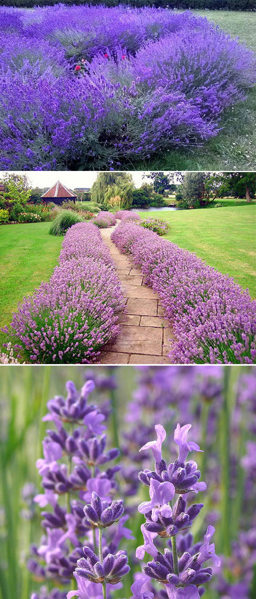
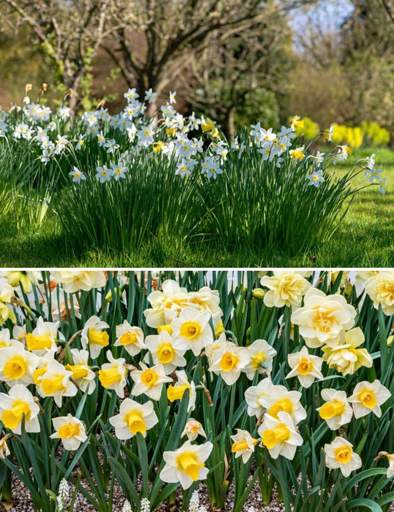
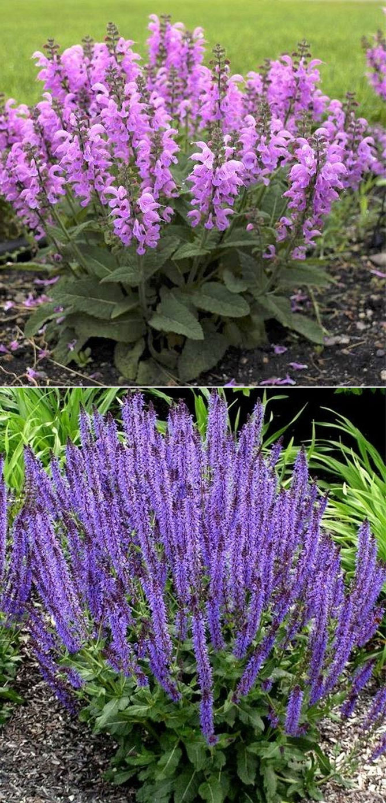
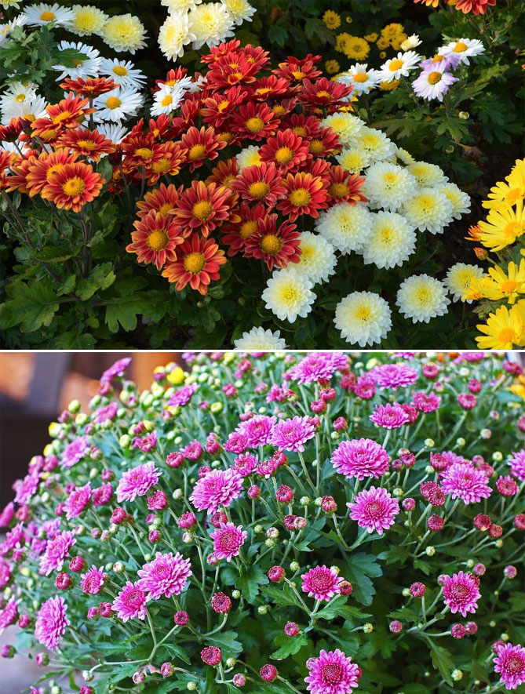
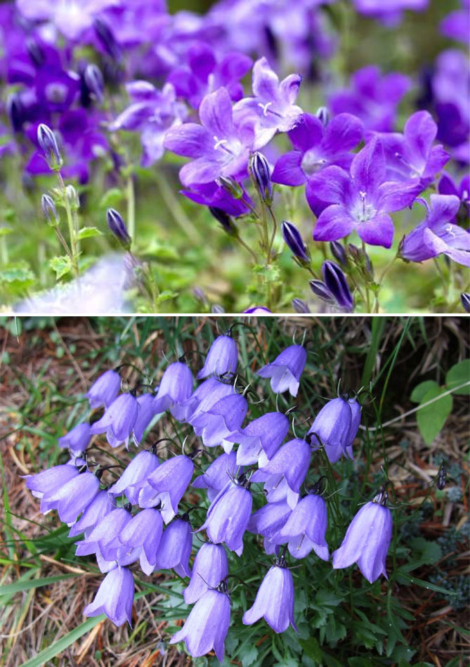

Вечнозеленое цветущее кустарниковое растение лаванда (лат. Lavandula) с узкими листьями, окруженными пучками нежных побегов, оканчивающимися соцветиями пришло с юга Европы. Маленькие фиолетовые цветы лаванды с сильным ароматом распускаются почти весь летний сезон (с июня до конца сентября), привлекая насекомых ( пчелы, бабочки). Лаванда очень любит солнце, выдерживает засуху. Посаженный в правильном положении и регулярно обрезаемый кустик лаванды может расти в хорошем состоянии до 15 лет на одном месте.
Растение идеально подходит для солнечных цветников, рокариев, для цветочных горшков на террасах, балконах. Оптимальный субстрат должен быть легким и проницаемым (например, смешанным с песком), предпочтительно с щелочным pH (6,5-7,5). При посадке не забывайте оставить пространство 30-40 см между растениями, так как они быстро растут. Узколистная лаванда характеризуется устойчивостью к морозу и высыханию, являются лучшей в наших погодных условиях. Хотя это растение не требует особого ухода, осенью − до середины сентября − не забудьте подстричь его побеги. Молодые растения укорачивают вдвое, старые - на 3-4 см до древесной части.
Эффектные луковичные цветы нарциссы легче выращивать, чем тюльпаны. Украшают нарцисс белые или желтые цветки с гофрированным центром чаще оранжевого цвета. Цветут с конца марта до начала мая, приятно пахнут. Нарциссы лучше растут в плодородной, хорошо дренированной почве, но их можно сажать на бедных грунтах, они лучше переносят засуху, чем тюльпаны. Позиция – солнечная или полутень. Неблагоприятны для нарциссов суровые бесснежные зимы.
Особенность шалфея – длинные, плотные, фиолетовые соцветия с приятным ароматом. Растение обладает лечебными свойствами – его используют для приготовления настоев, снимающих воспаление горла или рта. Шалфей, создает густые кустики, цветущие 1-2 раза за сезон – если подстричь их после цветения, к осени они дают цветы вновь. Растение устойчиво к засухе, многие сорта зимостойкие.
Шалфей лучше сажать в компании роз, других многолетников – в крупной группе он создает привлекательные эффекты. Ему требуется солнечное, сухое, хорошо дренированное положение, самые главные враги шалфея – избыток воды и недостаток места, тогда побеги ложатся, растение начинает страдать от грибковых заболеваний. Шалфей часто распространяется самостоятельно, поэтому не нужно беспокоиться о его размножении.
Хризантема (Dendranthema) относится к семейству сложноцветных (Asteraceae) и включает около 50 видов многолетних цветущих растений.
Цветут хризантемы осенью, некоторые сорта – во второй половине августа. Растения быстро растут, образуя формы полукустарника. Их стебли приподнятые, толстые, мягко опушенные, иногда и одревесневшие внизу. Листья, расположенные параллельно друг другу, обычно перистые.
Посадка и уход сложностей не вызывают. Хризантему легко выращивать, она предпочитает плодородную, гумусную почву, хорошо дренированную при щелочном рН. Лучше растет на солнечных местах. Любит слегка влажный грунт. Некоторые многолетние виды полностью морозоустойчивы, другие требуют зимнего хранения в помещении. Осенью нужно обрезать их до высоты около 15 см (после первых заморозков, которые уничтожат цветы). Цветы хризантем чрезвычайно долговечны после срезки и отлично подходят для ваз (стоят 3-4 недели).
Колокольчик (Campanula) легко выращивать, его требования зависят от вида, а видов существует около 200. Всем колокольчикам нужно солнце и не очень плодородная почва, предпочтительно хорошо дренированная, с нейтральной или слабощелочной реакцией.
